Assignment 4: Len Simulator
Lucas Karahadian
Part 1: Tracing Rays through Lenses
In the previous assignment, we intersected rays using a pinhole camera model. To give us more control of the images we create, we can simulate lens systems between our generated rays and the scene. This allows us to change the field of view without altering the size of the sensor as well as zoom in on images without moving the camera. In addition, we can simulate depth of field with lenses, adding realistic focus variations with the depth of the scene. For this project, we are using four different lens configurations.
|
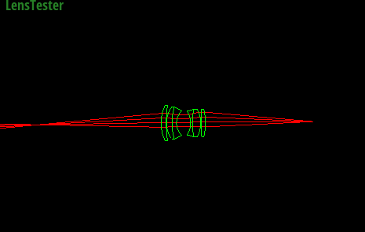
D-GAUSS F/2 22deg HFOV
|
|
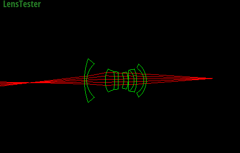
Wide-angle (38-degree) lens. Nakamura.
|
|
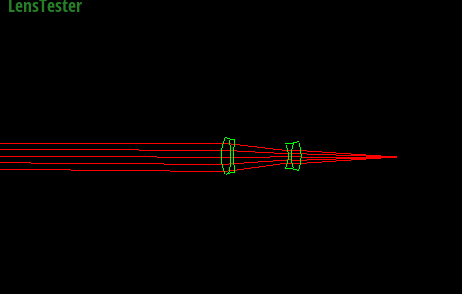
SIGLER Super achromate telephoto, EFL=254mm, F/5.6"
|
|
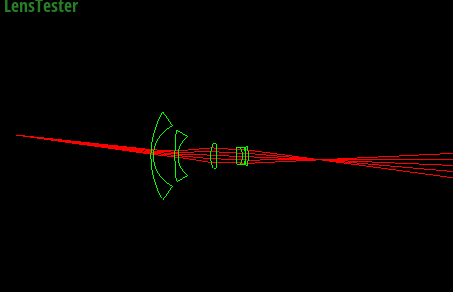
Muller 16mm/f4 155.9FOV fisheye lens
|
The above images show pairs of conjugate points for each lens i.e. where rays cast from a point converge on the other side of the lens. In the case of the telephoto lens, this convergence point is actually far off past the left side of the image because of how the lens is focused.
| Lens Name |
Infinity Focus Sensor Distance (mm) |
Close focus Sensor Distance (mm) |
| D-GAUSS F/2 22deg HFOV |
51.2545 |
63.4623 |
| Wide-angle (38-degree) lens. Nakamura. |
28.7423 |
34.4877 |
| SIGLER Super achromate telephoto, EFL=254mm, F/5.6" |
188.692 |
258.185 |
| Muller 16mm/f4 155.9FOV fisheye lens |
28.6069 |
63.4623 |
|
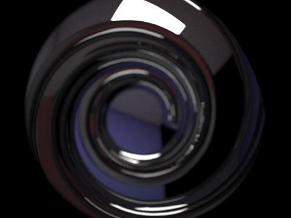
Demonstrating the defocus blur achieved by using the fisheye lens. Notice that the focus plane lies on the ceiling near the light source and the rest of the image is blurry.
|
Part 2: Contrast-based Autofocus
Currently in our lens system, we can adjust the focus by manually moving the sensor plane back and forth in relation to the lenses. But this takes a lot of effort. We want to design a system to do this focusing automatically.
To this end, I define the focus metric for a small image patch as the maximum variance of its three color channels (red, green, and blue). A lower metric corresponds to a less focused image, because when the patch is not focused, the pixels all are grouped around the mean, while when the patch focuses, the pixels separate (if the patch contains more than a flat uniform surface).
In order to search for the point of best focus, I start the sensor plane at the infinity focus point (the one closest to the lens) and sweep it to the close-focus point. I take note of the focus metric at points along the way and save the largest one. This process can be sped up by noticing that once you've passed the most in focus sensor distance, the focus metric will only decline. So, once the measurements are consistently decreasing, you know that any future measurements are unnecessary, and you can stop the search there.
|
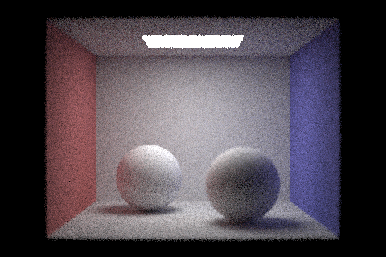
The result of autofocusing on a small patch on the back left corner. Notice that the back left seam is very clear, while the boundary of the front right sphere is blurred.
|
|
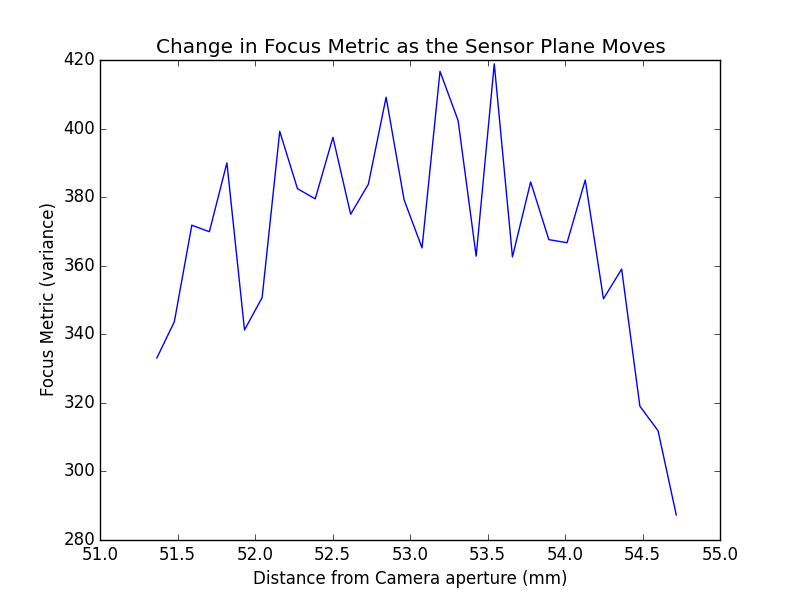
Focus measurements taken in the above autofocus routine. The heavy spiking observed shows that the max-variance metric is not as robust as I would like it to be, but it serves its purposes.
|
It turned out that this focus metric did a pretty poor job of measuring the focus, so I switched to the sum of the variance of the three channels.
|
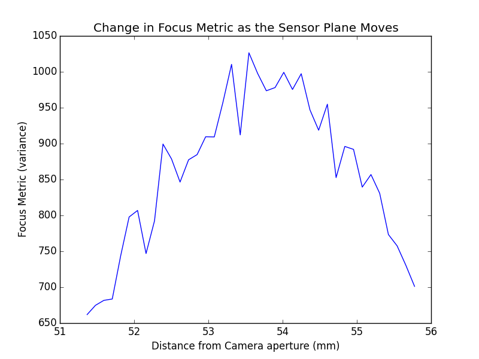
The focus measures of the more robust metric.
|
Highlights of each lens
These all use the glass ball cornell box from the previous assignment.
|
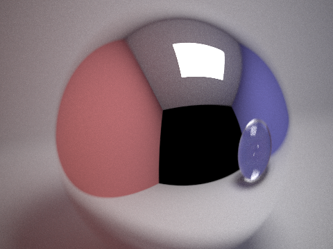
D-GAUSS F/2 22deg HFOV: Zoomed in on the mirror ball with focus on the opening in the box.
|
|
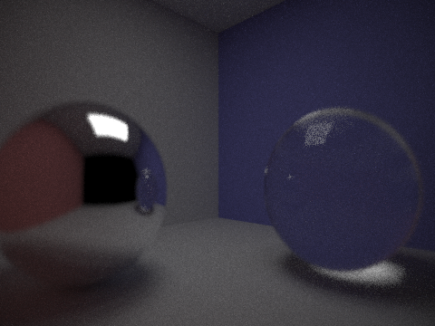
Wide-angle (38-degree) lens. Nakamura. A much smaller amount of light makes it through this lens, so the scene appears darker.
|
|
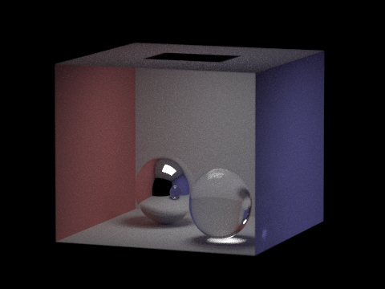
SIGLER Super achromate telephoto, EFL=254mm, F/5.6": The telephoto lens has a tiny FOV, so we can take pictures with very flat perspective.
|
 Muller 16mm/f4 155.9FOV fisheye lens: Conversely, the fisheye lens has a huge FOV, so we get these circularly distorted pictures.
Muller 16mm/f4 155.9FOV fisheye lens: Conversely, the fisheye lens has a huge FOV, so we get these circularly distorted pictures.
|